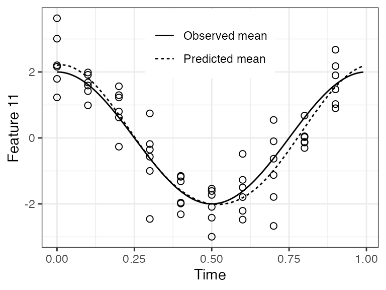
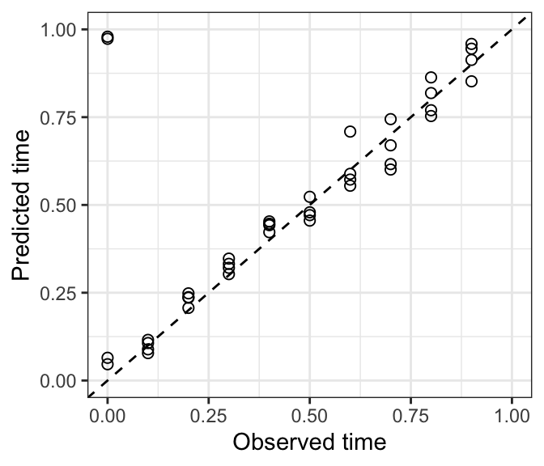
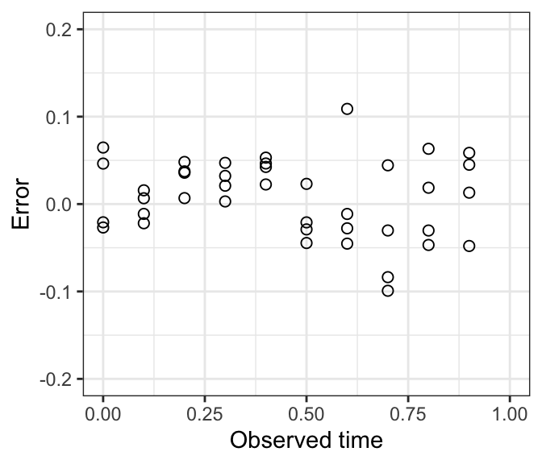
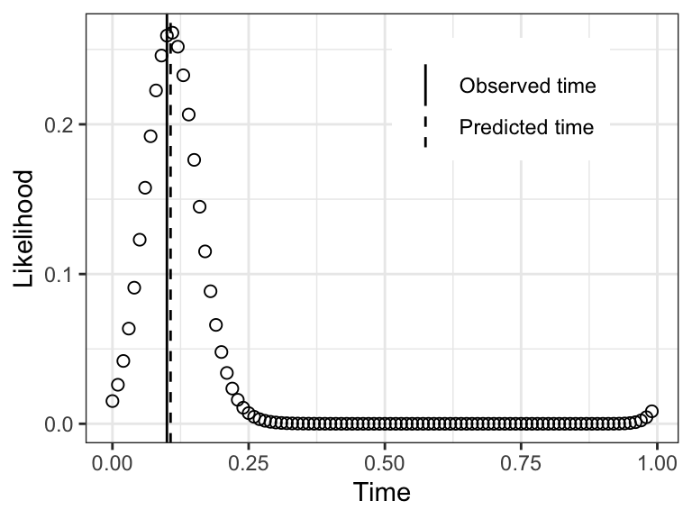
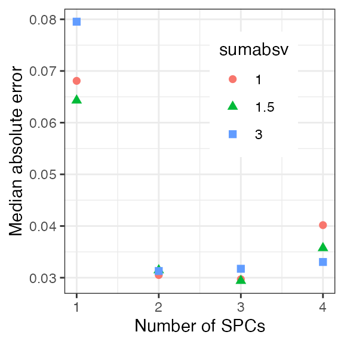
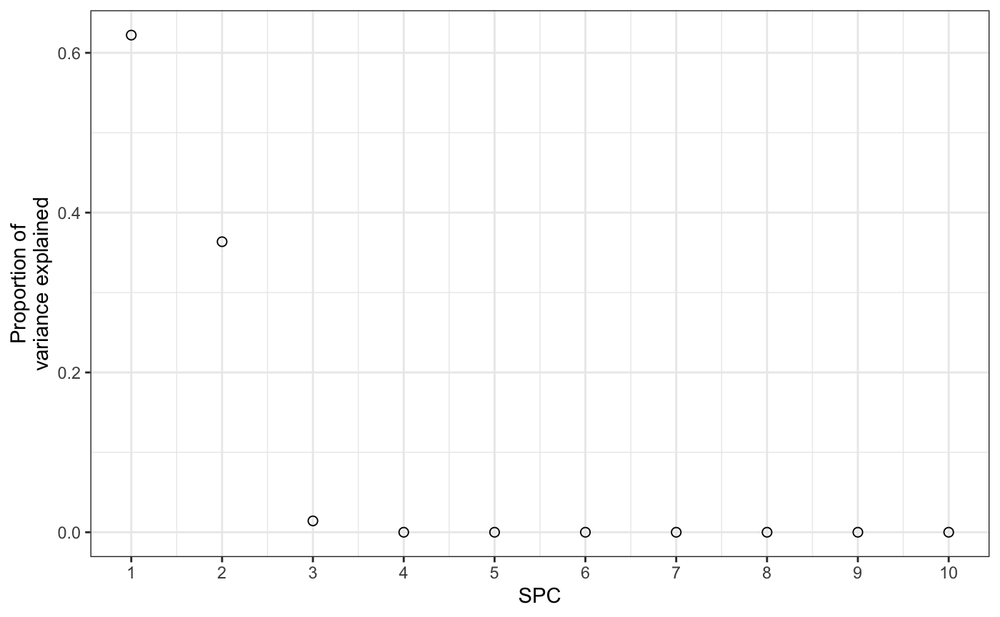
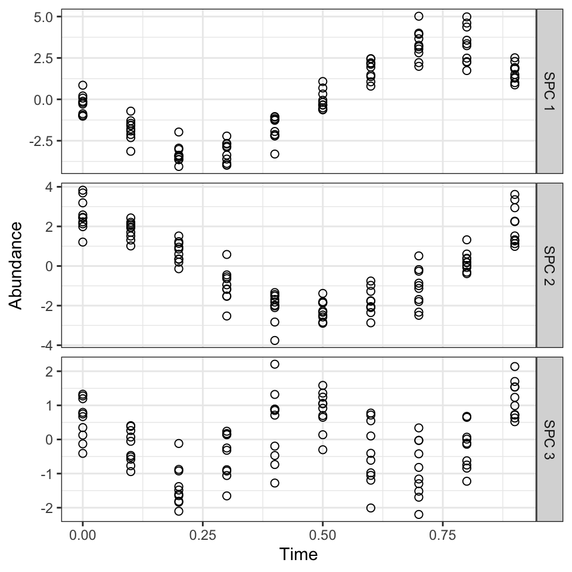
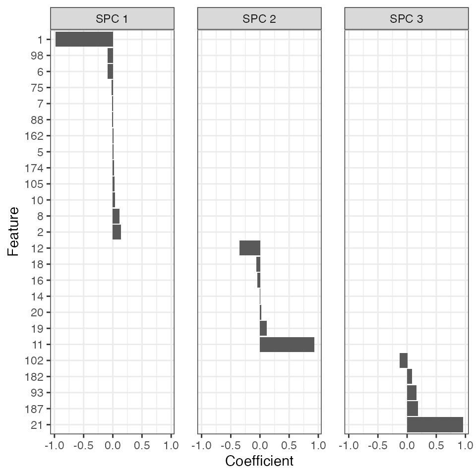

vignettes/introduction.Rmd
introduction.RmdZeitZeiger is a method for supervised learning on high-dimensional data from an oscillatory system. This vignette goes through an example of how to use ZeitZeiger to train and test a predictor, perform cross-validation, and plot the results.
Now we’ll simulate data from an oscillatory system. Our simulated data will have 100 observations, with measurements of 200 features and 10 time-points per period. Each feature will have Gaussian noise. We’ll call the periodic variable here “time,” which will go between 0 and 1.
nObs = 100 nFeatures = 200 amp = 0.5 time = rep((0:9) / 10, length.out = nObs) set.seed(42) x = matrix(rnorm(nObs*nFeatures, sd = 0.7), nrow = nObs)
The oscillator will produce three patterns: a sine, a cosine, and a cosine with twice the frequency. For each of the three patterns, two features will have relatively strong signal and eight more will have relatively weak signal.
baseSignal = sin(time * 2 * pi) x[, 1] = x[, 1] + 3 * baseSignal x[, 2] = x[, 2] - 0.5 * baseSignal for (ii in 3:10) { x[, ii] = x[, ii] + runif(1, -amp, amp) * baseSignal} baseSignal = cos(time * 2 * pi) x[, 11] = x[, 11] + 2 * baseSignal x[, 12] = x[, 12] - baseSignal for (ii in 13:20) { x[, ii] = x[, ii] + runif(1, -amp, amp) * baseSignal} baseSignal = cos(time * 4 * pi + pi / 6) x[, 21] = x[, 21] + baseSignal x[, 22] = x[, 22] - baseSignal for (ii in 23:30) { x[, ii] = x[, ii] + runif(1, -amp, amp) * baseSignal}
Now we’ll split the dataset into training and test sets.
idxTrain = 1:round(nObs * 0.6) xTrain = x[idxTrain, ] timeTrain = time[idxTrain] xTest = x[-idxTrain, ] timeTest = time[-idxTrain]
ZeitZeiger has three main steps: zeitzeigerFit, zeitzeigerSpc, and zeitzeigerPredict. Each function has several options, please see the help and Hughey et al. (2016) for more details. The preferred way to use them is to call each function separately. This lets you change the parameters for a later step without re-running the earlier steps.
zeitzeigerFit uses the training data to fit a periodic smoothing spline to the behavior of each feature as a function of time. zeitzeigerSpc then uses the spline fits to calculate sparse principal components (SPCs) for how the features change over time. zeitzeigerPredict then uses the training data and the SPCs to predict the corresponding time for each test observation. The two main parameters of ZeitZeiger are sumabsv, which controls the amount of regularization, and nSPC, which controls how many SPCs are used for prediction.
fitResult = zeitzeigerFit(xTrain, timeTrain) spcResult = zeitzeigerSpc(fitResult$xFitMean, fitResult$xFitResid, sumabsv = 1) predResult = zeitzeigerPredict(xTrain, timeTrain, xTest, spcResult, nSpc = 2)
Alternatively, you can run all three steps in one go using the zeitzeiger function, which returns a list consisting of the results of the above three functions.
zzFit = zeitzeiger(xTrain, timeTrain, xTest, sumabsv = 1, nSpc = 2)
Before looking at the predictions, it’s a good idea to check the quality of the spline fits.
timeRange = seq(0, 1 - 0.01, 0.01) jj = 11 df1 = data.frame(timeTrain, xTrain = xTrain[, jj]) df2 = data.frame(timeRange, xPred = predictIntensity(fitResult$xFitMean[jj, , drop = FALSE], timeRange), xObs = 2 * cos(timeRange * 2 * pi)) %>% gather(key = key, value = value, -timeRange) %>% mutate(key = factor(key, levels = c('xObs', 'xPred'), labels = c('Observed mean', 'Predicted mean')))
For feature 11, the fit looks good. In a real-world dataset, we wouldn’t know the observed mean, so we could only compare the predicted mean to the observations.
ggplot() + geom_point(aes(x = timeTrain, y = xTrain), data = df1, shape = 1, size = 2) + geom_line(aes(x = timeRange, y = value, linetype = key), data = df2) + labs(x = 'Time', y = sprintf('Feature %d', jj)) + theme_bw() + theme(legend.position = c(0.5, 0.85), legend.title = element_blank())

We can calculate the difference between predicted time and observed time, i.e., the error, using getCircDiff. This function accounts for the fact that time is periodic, so time = 0 is equivalent to time = 1. The error can range from -0.5 to 0.5.
dfTest = data.frame(timeObs = timeTest, timePred = predResult$timePred, timeError = getCircDiff(predResult$timePred, timeTest))
There are many ways to examine prediction accuracy. A simple one is to plot predicted time vs. observed time. Ideally, all points would lie on the line y = x. These predictions are pretty good. A couple test observations with an observed time of 0 have a predicted time slightly less than 1, which is ok.
ggplot(dfTest) + geom_point(aes(x = timeObs, y = timePred), size = 2, shape = 1) + geom_abline(slope = 1, intercept = 0, linetype = 'dashed') + scale_x_continuous(limits = c(0, 1)) + scale_y_continuous(limits = c(0, 1)) + labs(x = 'Observed time', y = 'Predicted time') + theme_bw()

When we plot error vs. observed time, we see those observations have a small negative error.
ggplot(dfTest) + geom_point(aes(x = timeObs, y = timeError), size = 2, shape = 1) + scale_x_continuous(limits = c(0, 1)) + scale_y_continuous(limits = c(-0.2, 0.2)) + labs(x = 'Observed time', y = 'Error') + theme_bw()

The predicted time for a test observation is the time with maximum likelihood. Another output of zeitzeigerPredict, however, is the likelihood across the entire range of time. By default, this likelihood is calculated at 100 discrete time-points, the same as timeRange that we defined earlier (the predicted time is not restricted to being one of these time-points).
obs = 2 dfLike = data.frame(timeRange, likelihood = predResult$timeDepLike[obs, 1, ]) dfVert = data.frame(type = c('Observed time', 'Predicted time'), xint = c(timeTest[obs], predResult$timePred[obs]))
For this observation, notice how the likelihood starts increasing at times slightly less than 1, then continues to increase at times greater than 0.
ggplot(dfLike) + geom_point(aes(x = timeRange, y = likelihood), size = 2, shape = 1) + geom_vline(aes(xintercept = xint, linetype = type), data = dfVert, show.legend = TRUE) + scale_linetype_manual(values = c('solid', 'dashed')) + labs(x = 'Time', y = 'Likelihood') + theme_bw() + theme(legend.position = c(0.7, 0.8), legend.title = element_blank())

To determine the best parameters for training a ZeitZeiger predictor, we can run cross-validation. The cross-validation functions can process the folds in parallel, if registerDoParallel is called beforehand. Because the three steps of ZeitZeiger are separated, we need to first randomly assign each observation to a fold, then use the same assignments for zeitzeigerFitCv and zeitzeigerPredictCv.
Here we’ll run cross-validation over three values of sumabsv and four values of nSPC. Typically a few values of sumabsv will suffice, and nSPC in this example can only range from 1 to 10 (because 10 is the default value of nTime).
registerDoParallel(cores = 2) sumabsv = c(1, 1.5, 3) nSpc = 1:4 nFolds = 10 foldid = sample(rep(1:nFolds, length.out = nObs)) fitResultList = zeitzeigerFitCv(x, time, foldid) spcResultList = list() for (ii in 1:length(sumabsv)) { spcResultList[[ii]] = zeitzeigerSpcCv(fitResultList, sumabsv = sumabsv[ii])} predResultList = list() for (ii in 1:length(sumabsv)) { predResultList[[ii]] = zeitzeigerPredictCv(x, time, foldid, spcResultList[[ii]], nSpc = nSpc)}
Before plotting, we need to reorganize the output, making a data.frame with the information for each prediction.
timePredList = lapply(predResultList, function(a) a$timePred) cvResult = data.frame(do.call(rbind, timePredList), timeObs = rep(time, length(sumabsv)), sumabsv = rep(sumabsv, each = length(time)), obs = rep(1:nObs, length(sumabsv)), stringsAsFactors = FALSE) cvResultGath = gather(cvResult, key = nSpc, value = timePred, -obs, -timeObs, -sumabsv) cvResultGath$nSpc = as.integer(sapply(as.character(cvResultGath$nSpc), function(a) substr(a, 2, nchar(a)))) cvResultGath$sumabsv = factor(cvResultGath$sumabsv) cvResultGath$timeError = getCircDiff(cvResultGath$timePred, cvResultGath$timeObs)
Now calculate the median absolute error for each set of parameter values.
cvResultGathGroup = cvResultGath %>% group_by(sumabsv, nSpc) %>% summarize(medae = median(abs(timeError)))
In this example dataset, the best accuracy seems to be at sumabsv = 1 and nSpc = 3.
ggplot(cvResultGathGroup) + geom_point(aes(x = nSpc, y = medae, shape = sumabsv, color = sumabsv), size = 2) + labs(x = 'Number of SPCs', y = 'Median absolute error') + theme_bw() + theme(legend.position = c(0.7, 0.7))

Now we can train a predictor on the full dataset using the almost optimal sumabsv (to keep things interesting) from cross-validation (all values of nSpc come along for free), and look at what ZeitZeiger has learned.
fitResultFinal = zeitzeigerFit(x, time) spcResultFinal = zeitzeigerSpc(fitResultFinal$xFitMean, fitResultFinal$xFitResid, sumabsv = 1.5) dfVar = data.frame(spc = 1:length(spcResultFinal$d), propVar = spcResultFinal$d^2 / sum(spcResultFinal$d^2))
Only the first three SPCs explain any appreciable amount of the variance in how the features change over time. This makes sense, as accuracy stopped improving or got worse at nSpc = 4.
ggplot(dfVar) + geom_point(aes(x = spc, y = propVar), size = 2, shape = 1) + scale_x_continuous(breaks = seq(1, 10)) + labs(x = 'SPC', y = 'Proportion of\nvariance explained') + theme_bw()

Now we can project the observations from feature-space to SPC-space, to look at how the three SPCs behave over time.
z = x %*% spcResultFinal$v[, 1:3] colnames(z) = c('SPC 1', 'SPC 2', 'SPC 3') zGath = gather(data.frame(z, obs = 1:nObs, Time = time, check.names = FALSE), key = SPC, value = Abundance, -obs, -Time)
We see that each SPC corresponds to one of the three signals that we created in the dataset. The signs are reversed, but that’s ok. So these are the patterns that ZeitZeiger was using to predict the time.
ggplot(zGath) + facet_grid(SPC ~ ., scales = 'free_y') + geom_point(aes(x = Time, y = Abundance), size = 2, shape = 1) + theme_bw()

Finally, we can look at which features contribute to which SPCs.
v = data.frame(spcResultFinal$v[, 1:3]) colnames(v) = c('SPC 1', 'SPC 2', 'SPC 3') v = v[apply(v, 1, function(r) any(r != 0)), ] v[v == 0] = NA v = v[do.call(order, v), ] v$feature = rownames(v) vGath = gather(v, key=spc, value=Coefficient, -feature) %>% mutate(feature = factor(feature, levels = rev(v$feature)))
Sure enough, ZeitZeiger found all the features with strong signal. In addition, the sign and value of the coefficient for each feature in its respective SPC correspond to what we simulated.
ggplot(vGath) + facet_wrap(~ spc, nrow = 1) + geom_bar(aes(x = feature, y = Coefficient), stat = 'identity') + labs(x = 'Feature') + coord_flip() + theme_bw() + theme(panel.spacing = unit(1.2, 'lines')) #> Warning: Removed 50 rows containing missing values (position_stack).
